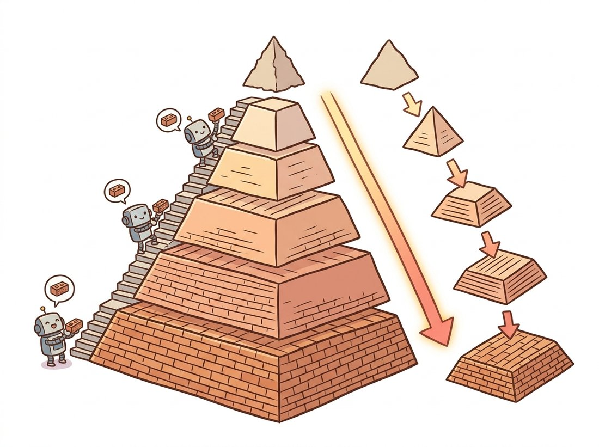

"Every floor of my building is a quarter the size of the one below, nobody can explain where the lost square footage went, and yet from the penthouse you can still reconstruct the lobby exactly. Real estate hates this one trick."
A Vertigo-Prone Image Pyramid
A pyramid stores an image at a ladder of resolutions so that every scale of structure, from the silhouette of a building to the texture of its bricks, becomes available at a resolution where it is easy to find, and the Laplacian variant does this with no redundancy and perfect reconstruction. Pyramids are the simplest multi-scale representation in vision, the cheapest (a Gaussian pyramid costs only one third more memory than the original image), and the most influential: their descendants run inside every modern detection, segmentation, and generation network.
Section 4.4 taught the safe way to halve an image: blur away the unrepresentable frequencies, then decimate. Do that once and you have a thumbnail; do it repeatedly, keeping every intermediate, and you have a Gaussian pyramid, a data structure so useful that Burt and Adelson's 1983 paper introducing its Laplacian refinement remains one of the most cited works in image processing. This section builds both pyramids from parts you already own, proves the Laplacian's perfect-reconstruction property in code, and closes with the trick that made the construction famous: blending two images so seamlessly that the seam cannot be found.
1. Why Multi-Scale? Beginner
Image content does not live at one scale. A face fills 400 pixels in a portrait and 12 pixels in a group photo; the same crosswalk is a texture from a drone and an obstacle from a bumper camera. Any algorithm with a fixed receptive footprint, a correlation template, a corner detector, a convolution kernel from Chapter 3, is therefore tuned to one band of object sizes and blind outside it. The multi-scale answer is disarmingly literal: run the algorithm at many resolutions of the same image. Small templates on coarse levels find large objects; the same templates on fine levels find small ones. Coarse-to-fine search adds a second gift: solve the problem cheaply on a tiny level, then refine the answer down the ladder, touching only a neighborhood at each finer level. Registration, stereo, optical flow, and template matching all exploit this schedule, and you will meet it again as the scale space inside SIFT in Chapter 10. The illustration below pictures the pyramid as a stepped building whose floors each halve in size, with the detail each floor loses carried back to rebuild the ground floor exactly.

2. The Gaussian Pyramid: REDUCE, Repeated Beginner
One pyramid step is the REDUCE operation: convolve with a small low-pass kernel $w$, then keep every second pixel in each direction,
$$G_{k+1} = \big(w * G_k\big)\downarrow_2, \qquad G_0 = \text{the original image}$$
Burt and Adelson's classic $w$ is the 5-tap binomial kernel $\tfrac{1}{16}[1, 4, 6, 4, 1]$ applied separably, a snug approximation to the Gaussian prefilter that Section 4.4 demands before 2x decimation. OpenCV packages the whole step as cv2.pyrDown:
# Build a Gaussian pyramid by repeated REDUCE (blur then halve) with
# cv2.pyrDown. Each level is a properly anti-aliased half-resolution copy,
# and the whole ladder costs under one third extra memory over the original.
import numpy as np
import cv2
from skimage import data
img = data.astronaut() # 512 x 512 x 3, uint8
def gaussian_pyramid(image, levels):
pyr = [image]
for _ in range(levels - 1):
pyr.append(cv2.pyrDown(pyr[-1])) # blur with [1,4,6,4,1]/16, then halve
return pyr
gp = gaussian_pyramid(img, levels=5)
print([level.shape[:2] for level in gp])
# [(512, 512), (256, 256), (128, 128), (64, 64), (32, 32)]
# Total storage: 1 + 1/4 + 1/16 + ... < 4/3 of the original image.Each level of the result answers a different question. $G_0$ holds everything; $G_2$ holds what survives viewing from four times the distance; $G_4$ holds only the broad strokes of the composition. What the Gaussian pyramid does not tell you is what each level lost, and that observation is the doorway to the second construction.
3. The Laplacian Pyramid: Storing the Differences Intermediate
Define EXPAND as the upsampling twin of REDUCE (insert zeros, interpolate with the same kernel; cv2.pyrUp). Then each Laplacian level is what a Gaussian level contains beyond what its coarser neighbor can explain:
$$L_k = G_k - \text{EXPAND}(G_{k+1}), \qquad L_{\text{top}} = G_{\text{top}}$$
Each $L_k$ is a band-pass image: it holds the detail in one octave of spatial frequency, the band that lives between level $k$'s resolution and level $k{+}1$'s. An octave here means a factor-of-two span of frequency, borrowed from music where one octave doubles the pitch; because each pyramid step halves the resolution, each Laplacian level captures exactly one such doubling of detail. (It is the discrete sibling of the difference-of-Gaussians band-pass from Section 3.4, a band-pass being a filter that keeps a middle range of frequencies while suppressing both the lowest and the highest, which is why the name honors the Laplacian operator.) The construction is trivially invertible by running it backward, $G_k = L_k + \text{EXPAND}(G_{k+1})$, so the pyramid of differences plus the tiny top level is a complete, perfectly reconstructable code for the image. Figure 4.5.1 lays out both directions.
# Build a Laplacian pyramid (each level is one octave of detail, the gap
# between a Gaussian level and the expanded next-coarser one) and reconstruct.
# Reusing the same EXPAND in synthesis makes the round trip exact.
def laplacian_pyramid(image, levels):
gp = gaussian_pyramid(image.astype(np.float32), levels)
lp = []
for i in range(levels - 1):
up = cv2.pyrUp(gp[i + 1], dstsize=gp[i].shape[1::-1]) # EXPAND to (w, h)
lp.append(gp[i] - up) # one octave of detail
lp.append(gp[-1]) # coarse residual on top
return lp
def reconstruct(lp):
out = lp[-1]
for lap in reversed(lp[:-1]):
out = cv2.pyrUp(out, dstsize=lap.shape[1::-1]) + lap
return out
lp = laplacian_pyramid(img, levels=5)
restored = reconstruct(lp)
print(np.abs(restored - img.astype(np.float32)).max()) # 0.0 (exact in float32)The Laplacian pyramid factors an image into frequency octaves, like the filter bank of Section 4.3, but computed with five-tap kernels instead of full-image FFTs, localized in space (each coefficient describes one neighborhood at one scale), and exactly invertible by construction. Whenever you want to process different scales differently (blend them, compress them, denoise them, generate them), decompose, act per level, reconstruct. Most of multi-scale vision is that sentence applied with taste.
The word "pyramid", plus the picture of ever-smaller levels, tempts students to assume a Laplacian pyramid stores the image in fewer numbers, an immediate compression. It is the opposite: the levels add to roughly $4/3$ of the original pixel count, so the representation is larger, not smaller (the wavelet transform of Section 4.6 is the critically sampled cousin that finally matches the pixel count exactly). The pyramid earns its keep not by reducing count but by making the values compressible: most detail-level coefficients are near zero, so they encode in very few bits. A second trap hides next door: a Gaussian-pyramid level $G_k$ is a deliberately bandlimited copy, not a lossless miniature. By Section 4.4's sampling theorem, the blur-then-halve step permanently discards the frequencies above the new level's Nyquist limit; you cannot upsample $G_2$ back into $G_0$ and recover the bricks. That discarded octave is exactly what the matching Laplacian level $L_k$ stores, which is why you need both pyramids to reconstruct.
4. Multi-Band Blending: The Trick That Made Pyramids Famous Intermediate
Paste two photos along a seam and your eye finds the cut instantly. Feather them with a wide alpha ramp and the seam blurs into a ghostly band instead. The diagnosis is spectral: a transition's correct width depends on wavelength. Coarse content (lighting, sky tone) should blend over a wide region; fine content (grass blades, fabric) should hand over within pixels. No single-width blend can satisfy both, but a pyramid blends every octave at its own natural width: decompose both images into Laplacian pyramids, blend each level under a Gaussian-pyramid-smoothed mask, and reconstruct.
# Blend two images seamlessly by combining their Laplacian levels under a
# Gaussian-smoothed mask. Each frequency octave hands over at its own natural
# width, so coarse content blends wide and fine content blends within pixels.
def multiband_blend(a, b, mask, levels=6):
"""mask: float image in [0,1]; 1 keeps a, 0 keeps b."""
la = laplacian_pyramid(a, levels)
lb = laplacian_pyramid(b, levels)
gm = gaussian_pyramid(mask.astype(np.float32), levels)
blended = [m * x + (1.0 - m) * y for x, y, m in zip(la, lb, gm)]
return np.clip(reconstruct(blended), 0, 255).astype(np.uint8)
a_img = data.astronaut().astype(np.float32) # 512 x 512 x 3
b_img = cv2.resize(data.coffee(), (512, 512)).astype(np.float32)
mask = np.zeros(a_img.shape[:2], np.float32)
mask[:, : a_img.shape[1] // 2] = 1.0 # hard left/right split
mask = mask[..., None].repeat(3, axis=2) # broadcast over color channels
seamless = multiband_blend(a_img, b_img, mask)
# The hard mask edge is smoothed differently at every level: wide for
# coarse bands, narrow for fine bands. The two photos fuse with no
# visible seam, the same trick as Burt and Adelson's famous orapple.Run multiband_blend with levels = 1 and then with levels = 6 on the same pair of images and compare. At levels = 1 the pyramid collapses to a single band, so you get an ordinary hard-mask paste and the seam is plainly visible down the middle. As you raise levels to 4 and then 6, the coarse bands hand over across an ever wider region while the fine bands stay crisp, and the cut melts away. Watching the seam reappear when you starve the blend of levels is the fastest way to feel why one fixed blend width is always wrong and why each octave needs its own transition width.
Burt and Adelson demonstrated their 1983 blending algorithm by fusing the left half of an apple with the right half of an orange. The resulting "orapple" became one of the most reproduced figures in image processing, and the same algorithm shipped, essentially unchanged, in panorama stitchers two decades later. Few papers can claim their demo image outlived several generations of the hardware it was computed on.
Who: A photogrammetry engineer at a drone-mapping company delivering weekly orthomosaics of construction sites.
Situation: Each site map is stitched from hundreds of overlapping nadir photographs taken across an hour of changing cloud cover, so adjacent frames differ in exposure and color temperature even after calibration.
Problem: Hard seam cuts left a patchwork of brightness steps that clients read as construction defects; wide feathered blends removed the steps but ghosted every slightly misaligned crane cable and washed out gravel texture, and the QA team rejected both versions.
Decision: The engineer switched the compositing stage to Laplacian multi-band blending (OpenCV ships it as cv2.detail_MultiBandBlender inside its stitching pipeline), with five bands and seams placed by a graph cut through low-gradient regions.
Result: Exposure steps disappeared into wide low-frequency transitions while edges handed over within a few pixels, double edges vanished, and the orthomosaic passed QA without per-seam manual retouching, saving roughly a day per delivery.
Lesson: When two signals must be joined, join each frequency band over a distance proportional to its wavelength. One blend width is always wrong; a pyramid gives you all widths at once.
Our from-scratch pyramid pair plus blending is about 35 lines. The library equivalents:
from skimage.transform import pyramid_gaussian, pyramid_laplacian
gp = list(pyramid_gaussian(img, max_layer=4, channel_axis=-1)) # one line
lp = list(pyramid_laplacian(img, max_layer=4, channel_axis=-1)) # one line
blender = cv2.detail_MultiBandBlender(num_bands=5) # production blendingRoughly 35 lines collapse to 2 or 3. skimage handles odd image sizes, arbitrary downscale factors, float conversion, and channel axes; OpenCV's MultiBandBlender adds the ROI bookkeeping, masking, and fixed-point optimizations that production panorama stitching needs. Keep the from-scratch version in your head, though: it is the one you will adapt when a custom per-level rule (denoise this band, boost that one) is the whole point.
5. The Pyramid's Afterlife in Deep Learning Advanced
Squint at a modern vision backbone and you will see this section's diagram. A CNN halves resolution stage by stage while deepening its channels: a learned Gaussian pyramid, with each stage's features playing the role of a level (the architectures of Chapter 20 make the correspondence explicit). Feature Pyramid Networks bolt on a top-down path with lateral connections, adding coarse semantic context back into fine levels, which is EXPAND-and-add wearing learned weights, and FPN-style necks remain standard in the detection and segmentation systems of Chapter 24. The reconstruction direction has an afterlife too: generative models that synthesize coarse structure first and add octaves of detail are running Code 4.5.2's loop with a neural network inside.
Coarse-to-fine generation is the Laplacian pyramid's second career. Cascaded diffusion systems (the design behind Imagen, 2022) chain a base generator with super-resolution stages, one model per pyramid level. Matryoshka Diffusion Models (ICLR 2024) train a single network jointly across nested resolutions, sharing information between levels the way a pyramid shares structure. Pyramidal Flow Matching (2024) generates video as a sequence of pyramid stages to cut the cost of high-resolution synthesis. Even latent diffusion's two-stage design, a compressing autoencoder below a generative model, echoes the pyramid bargain: spend capacity where the eye cares. When you reach Chapter 33, notice how often "resolution schedule" decisions are pyramid decisions in modern dress.
(a) Show that a full Gaussian pyramid (halving each axis per level) costs less than 4/3 of the original image's storage, summing the geometric series. (b) The Laplacian pyramid stores the same image in strictly more numbers than the original (count them for 512x512 and 5 levels), yet Burt and Adelson proposed it as a compression tool. Explain what property of the Laplacian levels' value distributions makes them highly compressible, and which chapter-2 tool you would use to verify it.
Using Code 4.5.2, build a "hybrid image": take the top three Laplacian levels (coarse bands) from a photo of one face and the bottom two levels (fine bands) from another, reconstruct, and view the result both full-size and shrunk to a thumbnail. Which face dominates at which viewing size, and why? Relate the effect to the band-pass interpretation of Laplacian levels.
Repeat the blend of Code 4.5.3 with levels = 1, 2, 4, 6, and 8 on a pair of photographs with different exposures. For each result, measure the maximum brightness step across the seam line and visually grade ghosting in a region with fine texture. Plot both against the number of levels and identify the point of diminishing returns. Explain why very deep pyramids stop helping once the top level is only a few pixels across.